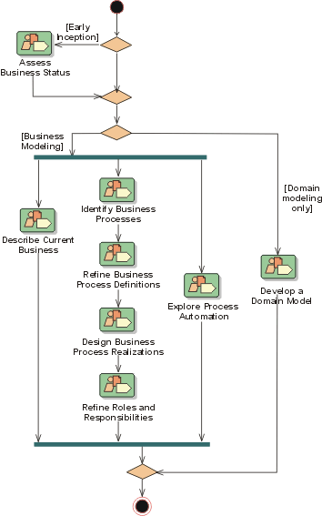

Business Modeling:
Workflow



There are several paths one may take through this workflow, depending on what
purpose your business-modeling effort has, as well as where in the development
lifecycle you are.
- In your first iteration you will assess the status of the organization in
which the eventual system is to be deployed (the target organization), as
defined in Assess Business Status. Based on the
results of the assessments, you will be able to make decisions on how to
continue in this iteration, and also on how to work in subsequent
iterations. In Concepts: Scope of Business Modeling
you will find some typical scenarios that may occur.
- If you determine that no full scale business models are needed, only a
domain model (scenario #2 in Concepts: Scope of
Business Modeling), you will follow the alternative Domain
Modeling path of this workflow. In the Rational Unified Process, a
domain model is considered a subset of the business object model,
encompassing the business entities of that model.
- If you determine that no major changes will occur to the business
processes, all you need to do is chart those processes and derive system
requirements (scenario #1 in Concepts: Scope of
Business Modeling). There is no need to keep a special set of models of
the current organization, you can directly focus on describing the target
organization. You would follow the business modeling path, but skip
"describe current business".
- If you do business modeling with the intention of improving or
re-engineering an existing business (scenario #3, #4, and #6 in Concepts:
Scope of Business Modeling), you would model both the current business
and the new business.
- If you do business modeling with the intention of developing a new
business more or less from scratch (scenario #5 in Concepts:
Scope of Business Modeling), you would envision the new business and
build models of the new business, but skip "describe current
business".
Copyright
© 1987 - 2001 Rational Software Corporation
| |

|
 Disciplines >
Disciplines >
 Business Modeling >
Business Modeling >
 Workflow
Workflow